NeRF: Representing Scenes as Neural Radiance Fields for View Synthesis
INR 분야에 관심이 생겨 INR의 기초를 공부할 수 있는 논문을 찾다가 이번 논문을 공부하게 되었습니다
NeRF는 몇 개 point에서의 2D 이미지만으로도 이미지 내 물체를 3D로 렌더링하는 새로운 방법을 제안한 논문으로, 2020년 ECCV에 Best paper로 선정되었습니다.
NeRF 프로젝트 페이지
https://www.matthewtancik.com/nerf
NeRF: Neural Radiance FieldsA method for synthesizing novel views of complex scenes by optimizing an underlying continuous volumetric scene function using a sparse set of input views.www.matthewtancik.comIntroduction
NeRF는 입력 이미지 세트에서 장면의 연속 5D neural radiance* field representation(NeRF)을 최적화하는 방법을 제시합니다. 볼륨 렌더링**의 기술을 사용하여 광선을 따라 이 장면 표현의 샘플을 축적하여 모든 관점에서 장면을 렌더링합니다.
* radiance 방사: 중앙에서 주변으로 퍼져나간다는 말. 에너지가 발산된다는 뜻도 있다. ex) 방사선
** 볼륨 렌더링: 과학적 시각화와 컴퓨터 그래픽스 분야에서, 볼륨 렌더링은 3차원 스칼라 장 형태의 이산 샘플링 데이터를 2차원 투시로 보여주는 기술.
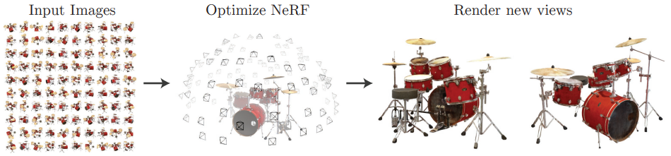
위 그림에서는 주변 반구에서 무작위로 캡처된 합성 드럼 장면의 100개 입력 뷰 세트를 시각화하고
최적화된 NeRF 표현에서 렌더링 된 두 가지 새로운 뷰를 보여줍니다.
Neural Radiance Field Scene Representation
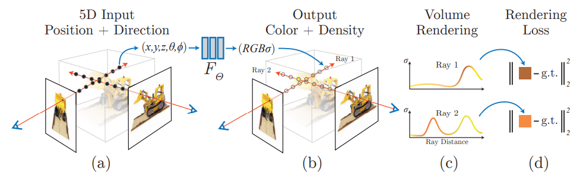
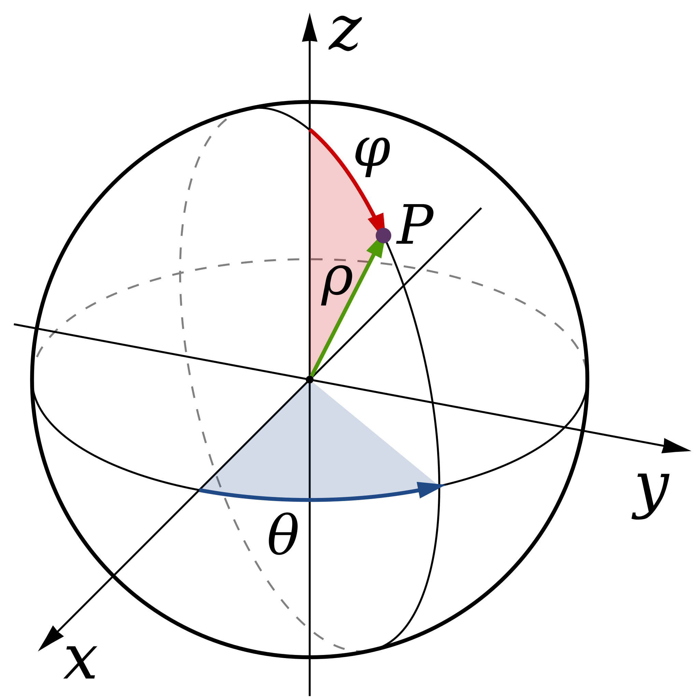
input: 3D location x = (x, y, z), 2D viewing direction (θ, φ)*
output: color c = (r, g, b), volume density σ
* θ, φ를 각각 경도, 위도 개념으로 생각하면 편함
(a) 카메라 Ray를 따라 5D 좌표(위치 및 보는 방향)를 샘플링하여 이미지를 합성
(b) 해당 위치를 MLP에 넣어 색상 및 부피 밀도 생성
(c) 볼륨 렌더링 기술을 사용하여 이러한 값을 이미지로 합성
(d) 이 과정은 미분 가능하므로 그래디언트 디센트를 활용해 합성된 이미지와 실제 관측 이미지 사이의 오류를 최소화하여 최적화
여러 뷰에서 이 오류를 최소화하면 실제 물체가 포함된 위치에 높은 볼륨 밀도와 정확한 색상을 할당하여
네트워크가 장면의 일관된 모델을 예측할 수 있습니다.
이를 통해 물체를 바라보는 모든 방향에서 해당 물체의 이미지를 알 수 있게 됩니다.
이때, 카메라 위치에서 3D 물체의 한 지점을 바라볼때 생기는 직선을 Ray 라고 합니다.
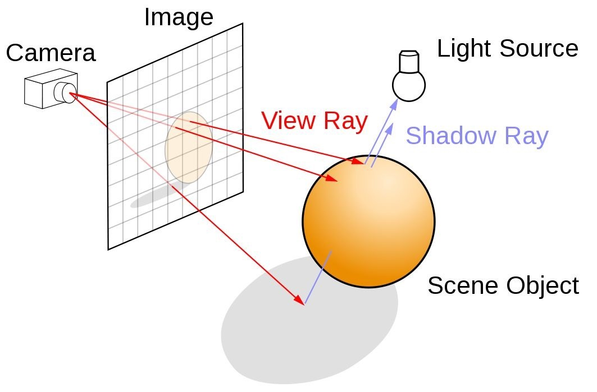
Train 과정
카메라 시점(𝜃,𝜙)와 Voxel* 좌표(x,y,z)를 입력으로 하고, RGB와 Volume Density(𝜎)를 출력으로 하는 함수 F를 정의하여, FCN(Fully Connected Network)으로 함수 F 모델을 학습합니다.
이때 Density는 투명도의 역수 개념으로 density가 낮으면 투명해서 뒤의 물체가 잘 보이고, 높으면 뒤의 물체가 가려지는 것입니다.
+) density를 물체가 존재할 확률로 생각할 수도 있다.
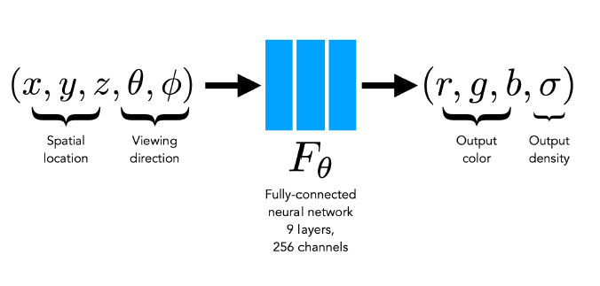
* Voxel: 3차원 공간에서 정규 격자 단위의 값. 복셀이라는 용어는 부피(volume)와 픽셀(pixel)을 조합한 혼성어. 2차원 이미지 데이터가 픽셀로 표시되는 것에 대한 비유.
Inference 과정
새로운 카메라 시점(𝜃,𝜙)이 입력으로 주어지면, Train한 모델로 3D Voxel 좌표에서의 RGB𝜎 값을 계산한 후,
대응되는 2D Pixel 좌표로 Summation함으로써 색상 값을 Prediction합니다.
Multiview에서 consistent한 image를 생성하기 위해
density σ의 경우는 location input인 x의 영향만 받게 하고, color는 모든 input의 영향을 다 받도록 설계하였습니다.
즉 density는 바라보는 방향과 상관없이 일정하고, 색상은 바라보는 방향에 따라 달라집니다.
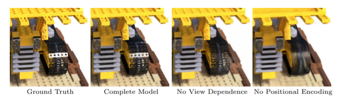
RGB 값을 시점에 따라 다르지 않게 하면 반사광을 표현하기 어렵습니다.
위 그림에서 3번째 이미지가 그 예시입니다.
이를 위해 MLP는 3D coordinate x를 input으로
8 fully-connected layers (256 channels per layer, activation function=ReLU)를 사용하고,
output으로 density σ와 256-dimensional feature vector를 얻습니다.
이 feature vector는 다시 camera ray의 viewing direction과 연결되어
하나의 추가적인 fully-connected layer (128 channels, activation = ReLU)를 통해
output으로 view-dependent RGB color를 도출합니다.
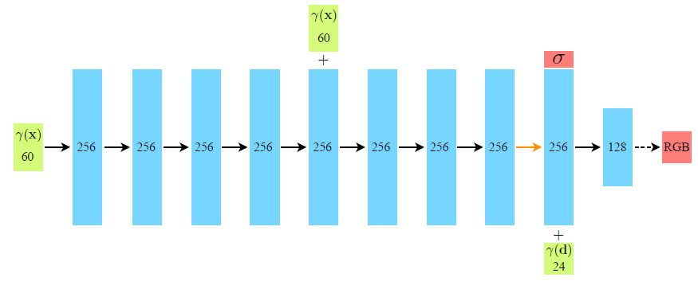
γ(x) : 3d point의 위치, γ(d) : viewing direction
network 중간에 한 번 더 더해지는 γ(x)는 skip connection을 의미합니다.
네트워크 입력 차원이 총 5개(x,y,z,θ,φ)로 설계 되었는데
입력 dimension이 60d, 24d인 것은 Positional Encoding 을 사용했기 때문입니다.
좌표 기반의 저차원 입력값을 고차원 공간에 매핑할 때,
NN에 들어가기 전 high frequency functions을 사용해주면 효과적이라는 이전 연구결과를 사용했다고 합니다.
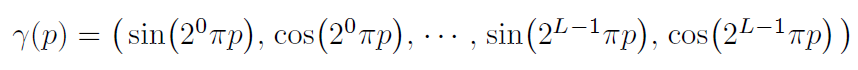
positional encoding에는 위와 같이 sin, cos 함수가 사용되고, 결과적으로 dimension이 2L 배가 됩니다.
바라보는 방향보다 3d point의 위치에 정보가 더 많기 때문에
position에는 L=10을 사용하고 바라보는 방향에는 L=4를 사용합니다.
Volume Rendering with Radiance Fields
카메라 위치(o)와 viewing direction(d)이 정해지면
Ray 위에 있는 3d point들의 좌표는 t 지점에 대해 다음 식으로 계산할 수 있습니다.
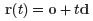
Ray에 있는 점들이 가지는 color 값들을 weighted sum하면
카메라 위치에서 보이는 2d 이미지 상의 픽셀 하나가 갖는 color 값을 구할 수 있고,
이를 식으로 나타내면 다음과 같습니다.
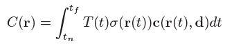
r은 Ray 하나를 의미하고 tn, tf는 각각 Ray가 물체를 통과할때 시작점과 끝점을 의미합니다.
c와 σ는 각각 t 지점에서의 color와 density입니다.
Density가 클수록 색상이 진하다는 것을 의미하여 색상에 가중치를 크게 주는 것으로 해석할 수 있습니다.
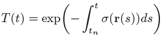
T(t)는 광선이 다른 입자에 부딪히지 않고 tn에서 t로 이동할 확률을 나타냅니다.
위와 같이 σ에 대한 적분을 통해 구하는데, 이는 t보다 앞에 있는 점들의 density 합으로 생각할 수 있습니다.
이 값이 크면 앞에 있는 것에 가려져 잘 보이지 않기 때문에 마이너스 부호가 붙어 있는 모습입니다.
즉, t 보다 앞부분의 density가 작을수록, t 지점의 density가 클수록
t 지점의 색상 값에 곱해지는 weight는 커지게 됩니다.
모든 좌표에 대한 Color 값을 계산에는 한계가 있기 때문에, Ray 위의 좌표를 Sampling 하는 기법을 사용했습니다.
투명한 영역이나 가려진 영역의 좌표인 경우, Rendering에 큰 영향을 끼치지 않기 때문에
1차 Sampling 후에, 영향력이 큰 좌표들에 대해 2차 Sampling합니다.
- 1차 Sampling은 Stratified Sampling (층화추출법 - 모집단을 층으로 나눈 뒤 각 층에서 표본을 추출) 방식을 사용하였는데, 이는 각 Ray에 대해 중복되지 않도록 균일하게 구간(bin)을 나누고, 각 구간 내에서 랜덤하게 1개의 좌표를 선택하는 방식입니다. tn(n=near) 좌표부터 tf(f=far)까지의 구간을 N개로 균일하게 나누고, i번째 좌표에 대한 U(집합)을 ti로 표현 하였습니다.
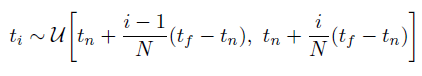
- 2차 Sampling은 Inverse transform sampling (Coarse Network에서 사용했던 Weight 값과 비슷한 분포를 가지는 point들 추출) 방식을 사용합니다. 1차 Sampling 좌표들에 대해 Color 값들을 계산 한 후에, 앞서 설명한 Color을 계산하기 위해 사용한 불투명도인 wi를 사용하여, Ray에 대한 PDF(확률밀도)을 계산 합니다. PDF를 적분하여 CDF(누적분포)를 계산 한 후, 난수값으로 Sampling을 합니다. 그러면 wi가 큰 구간에서, 더 많은 좌표들을 Sampling 할 수 있습니다. 쉽게 말해, density가 높은 쪽에 분포한 point들이 실제로 의미있는 값들이 많을 것이라는 가정을 수식에 담아 density가 높은 값들을 위주로 다시 Sampling 하여 Volume Rendering하는 것입니다.
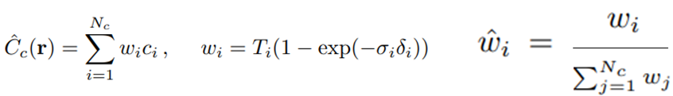
1차 Sampling을 Coarse* Sampling, 2차 Sampling을 Fine** Sampling이라고 부르고, 1,2차 Sampling을 모두 사용합니다.
논문 기본 수식에서는 Nc를 64개, Nf를 128개 두었습니다.
* coarse: 큼직큼직한, 거친
** fine: 곱고 세밀한, 정밀한
아래 식의 σ, c를 neural network를 통해 구하게 됩니다.
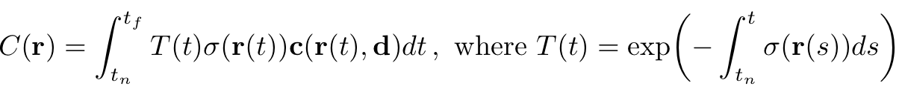
NeRF 논문의 핵심 수식입니다. 이후 나오는 파생 논문에서도 해당 수식을 응용합니다.
위 수식은 Volume Rendering의 기본 수식을 기반으로 만들어졌습니다.
2D Pixel좌표의 color(C(r))는 3D Voxel좌표 color(ci)와
불투명도(Ti * (1 - exp(-𝜎𝑖)))에 대한 weighted sum으로 볼 수 있습니다.
불투명도는 Ti와 1 - exp(-𝜎𝑖) 2개로 나뉩니다.
- Ti는 i번째 Voxel이 보일 확률입니다.
Ti는 0 ~ i - 1 번째 voxel의 volume density를 사용합니다. 즉 i 번째 voxel보다 카메라와 가까운 쪽의 voxel이 불투명하다면, Ti는 작아집니다. - 1 - exp(-𝜎𝑖)는 i번째 Voxel이 surface일 확률입니다.
1 - exp(-𝜎𝑖)는 MLP를 통한 volume density 값이 클수록 i 번째 voxel의 color 영향력이 커집니다.
예시로 이해해 볼 수 있습니다.
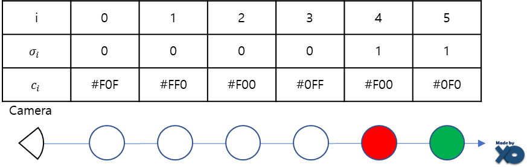
i=0이 카메라에서 가장 가까운 3D voxel좌표이고, i가 커질수록 멀리 위치합니다.
i=3일 때, 𝜎𝑖 는 0이므로, 1-exp(-𝜎𝑖𝛿𝑖) 식은 0이 되면서, c3 은 C(r)에 영향력이 없습니다.
i=4일 때, 𝜎𝑖 는 0보다 크고, Ti는 1이므로, c4 는 C(r)에 많은 영향력을 미칩니다.
i=5일 때, 𝜎𝑖 는 0보다 크고, Ti는 𝜎4에 의해 크기가 줄어듭니다.
이는 4번째 Voxel에 의해 5번째 Voxel이 가려져, c5 가 C(r)에 적은 영향력을 주도록 수식화 되어 있습니다.
이러한 설계를 통해 아래 그림과 같이, 다른 View Direction에서 같은 지점을 바라 볼 때
Radience가 달라지면서, 다른 RGB 값을 갖게 합니다.
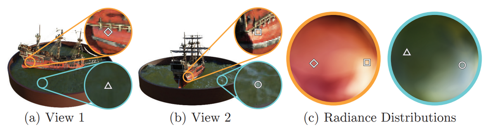
Implementation details
논문에서는 network 두 개가 사용됩니다.
둘은 각각 coarse와 fine한 정보를 위한 것이고 t를 샘플링하는 방법에서 차이가 있습니다.
Coarse network는 위의 방법처럼 uniform하게 sampling하여 학습하고,
이렇게 sampling된 점들을 coarse network에 통과시켜 얻은 값으로 다시 한 번 sampling하고
이 점들은 fine network의 학습에 사용됩니다.
이러한 과정은 ray 위의 점들을 sampling할 때 좀 더 의미 있는 점들을 찾기 위해 coarse network를 일종의 teacher 모델처럼 사용하는 것으로 생각할 수 있습니다. 결국 loss 함수는 아래와 같이 두 network에 대한 식으로 구성됩니다.
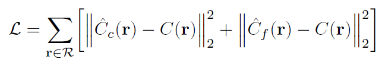
Results
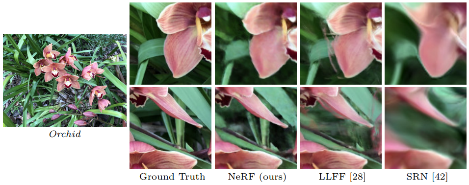
NeRF는 기존 방법들보다 물체의 뒷부분을 더 잘 표현하고 Ghost Effect들을 제거하여 깔끔하게 물체를 렌더링합니다.
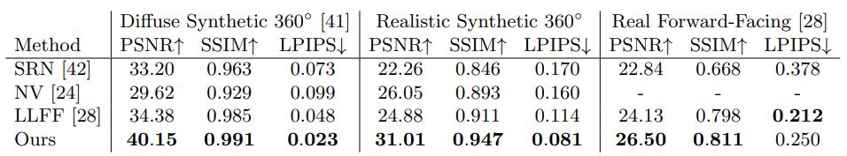
아래는 Ablation Study 결과입니다.
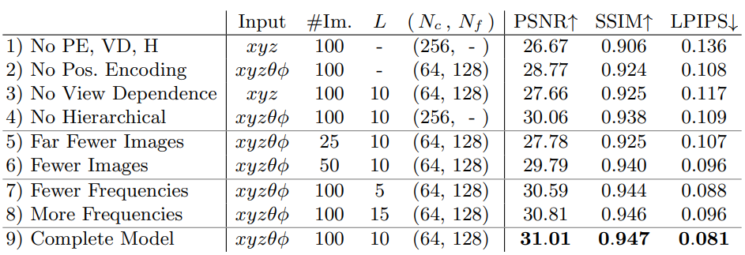
#Im 은 training input 이미지의 개수, L은 positional Encoding의 L값 ,
N_c , N_f는 coarse Model과 fine Model에서 각각 한 Ray 내에서 Sampling 되는 point들의 개수를 뜻합니다.
NeRF의 단점
학습 및 렌더링 속도가 느립니다.
→ DeRF(CVPR 2021), NeRF++, plenoxel(CVPR 2022)
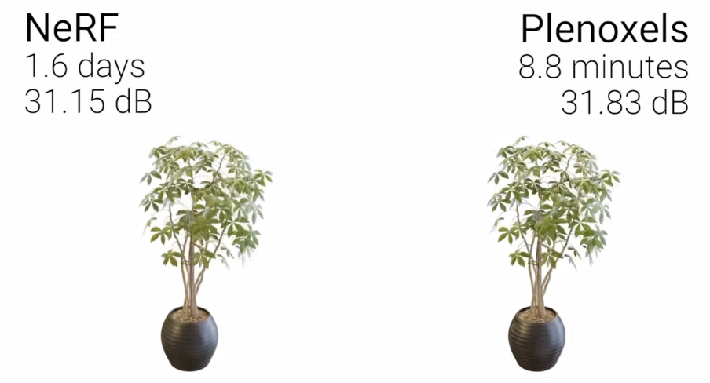
Static한 Scene에 대해서만 성능이 좋습니다.
→ D-NeRF(CVPR 2021), Nerfies(ICCV 2021), HyperNeRF
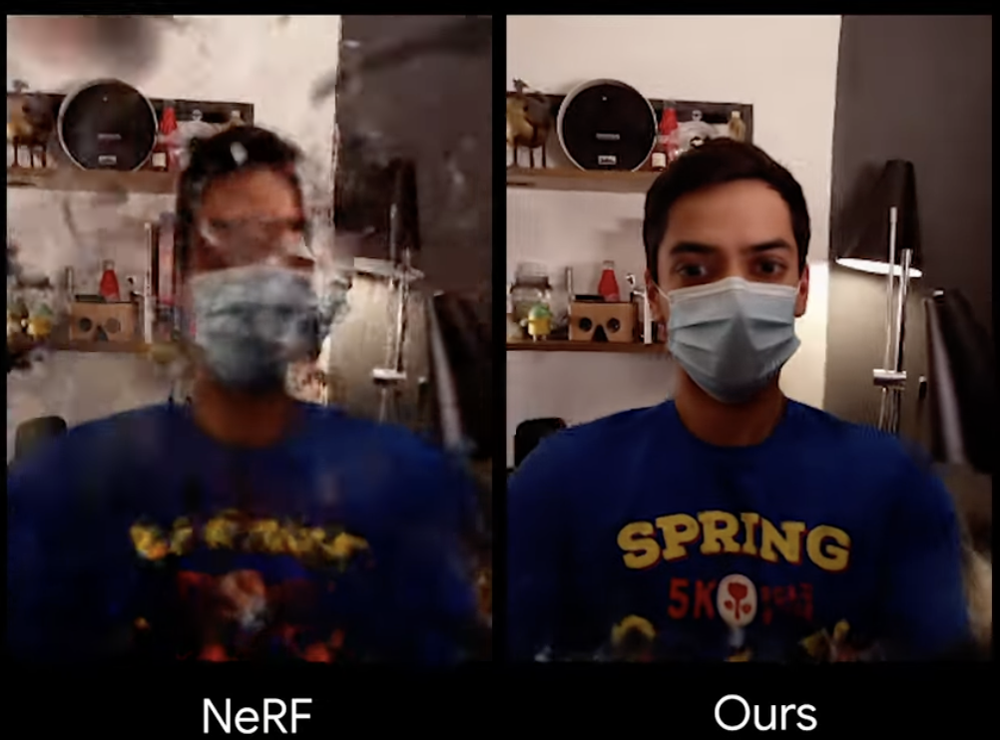
다양한 환경에서 찍은 하나의 물체에 대해서 학습이 어렵습니다.
→ NeRV(CVPR 2021), NeRD(CVPR 2021), NeRF in the wild (CVPR 2021)
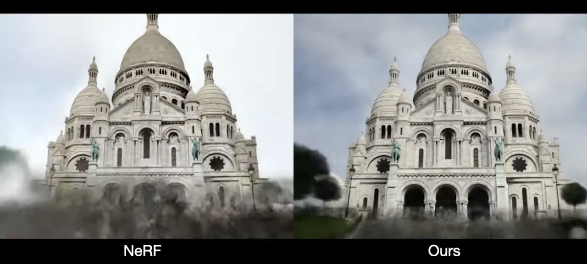
한 Model로 하나의 물체만 만들어낼 수 있어 General하지 않습니다.
→ GIRAFFE(CVPR 2021), pixel-NeRF(CVPR 2022)
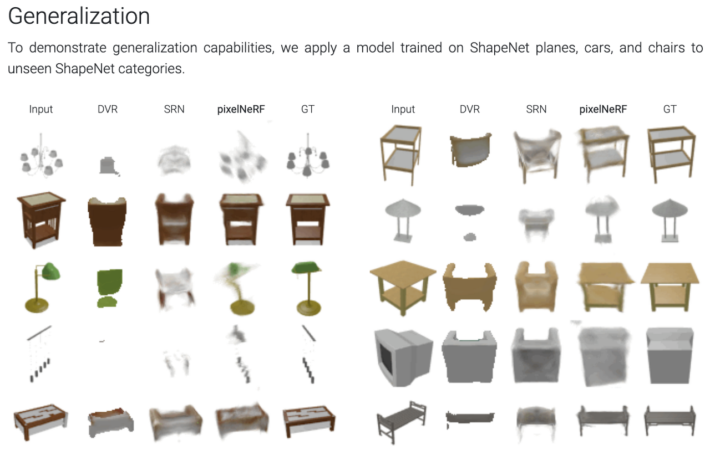
Input으로 Camera Parameter 값이 들어가야 합니다.
→ iNeRF(IROS 2021), NeRF--, GNeRF(ICCV 2021), BARF(ICCV 2021), SCNeRF(ICCV 2021)
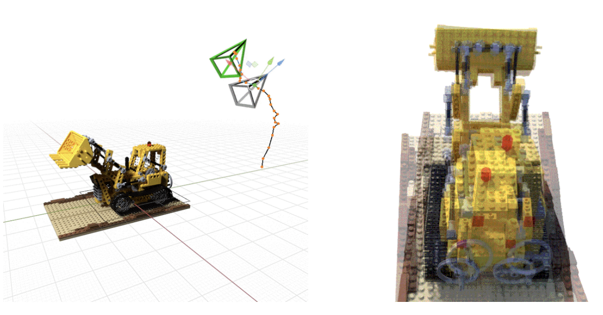
다양한 시점의 너무 많은 training set이 필요합니다.
→ pixel-NeRF(CVPR 2022), DietNeRF(ICCV 2021), Instant-NGP
참고:
[논문 리뷰] NeRF (ECCV2020) : NeRF 최초 논문논문명 : NeRF: Representing Scenes as Neural Radiance Fields for View Synthesis (ECCV2020) Introduce 현실 이미지를 다양한 카메라 각도에서 High Quality로 Rendering하는 방법에 관한 연구입니다. 2020년 ECCV에서 최초로 발xoft.tistory.com NeRF : Neural Radiance Field(1)이번 포스트에선 2020년 이후 Computer vision 분야에서 3D view synthesis를 인기 연구주제로 자리잡게 한 NeRF 논문을 포함하여 NeRF와 관련된 연구들을 정리해보았습니다.animilux.github.io [NeRF] NeRF 논문 리뷰 : Neural Radiance Fields for View SynthesisDetection을 주로 연구하다가 3D 쪽에 관심을 갖게 되어 NeRF라는 방법(이제는 자체가 분야가 된..)을 접하게 되었고, 흥미가 생겨 관련하여 연구중에 있습니다. 이번 글에서는 NeRF를 처음 제안한 논nuggy875.tistory.com